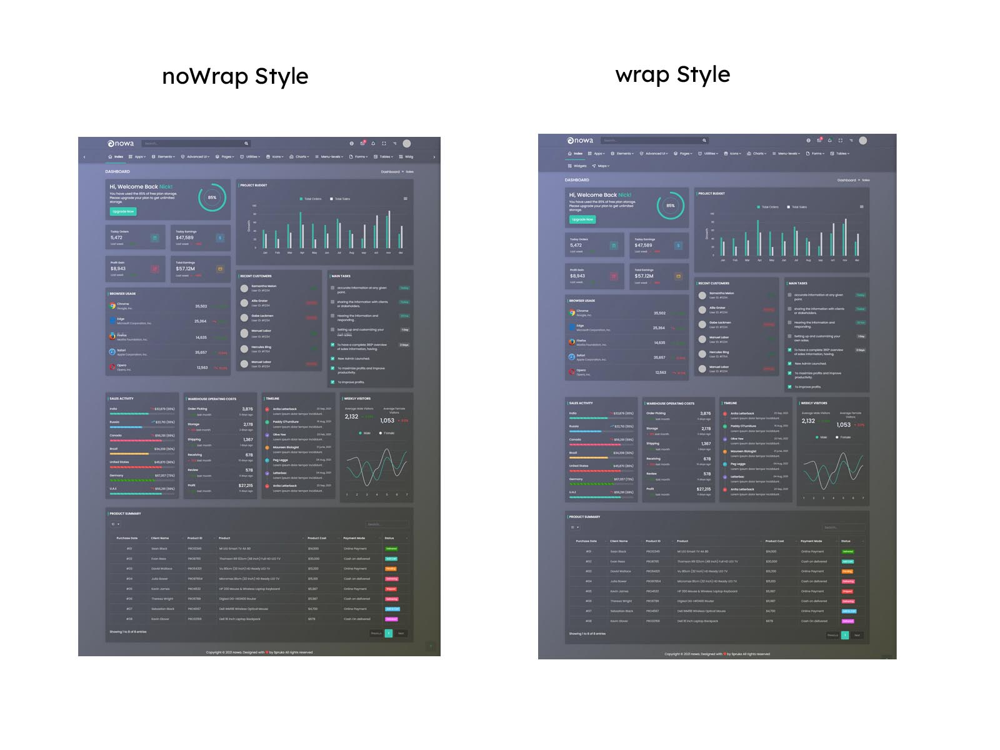

FAQ'S
1) How to Change Font Style ?
Step 1:
Go To _fonts.scss (assets/scss/custom/fonts/_fonts.scss )
if you want to change another font-family Go to the site Google Fonts And Slect One font Family and import In to style.css file
How to Select font Family
Example:

Step 2:
And paste Your Selected font-family in _fonts.scss
Example:
@import url("https://fonts.googleapis.com/css?family=Roboto:300,400,500,700,900");
Step 3:
And add the Your Selected font-family in _bootstrap-styles.scss(assets/scss/bootstrap/_bootstrap-styles.scss)
Example:
body {
margin: 0;
font-family: "Roboto", sans-serif;
font-size: 14px;
font-weight: 400;
line-height: 1.5;
color: $default-color;
text-align: left;
background-color: $background;
}
2) How to Change Primary Color ?
Step 1:
Go To _custom-styles.scss (assets/scss/custom/_custom-styles.scss )
You will find --primary-bg-color:#38cab3; , where you can
simply change color code to change primary color
How to Change Primary Color
Example:

Simply you can also change color for primary-bg-hover:#5cd3b9;
& --primary-bg-border:#38cab3; , where you can
simply change color code to change them
3) How to Change Logo ?
Go To "assets/img/brand" folder and replace your logo with Previous Logos within in image size. note: Please don't increase logo sizes. Replace your logo within given image size. otherwise the logo will not fit in particular place it disturbs the template design.
4) How to Enable RTL version?
One more methode to add RTL version
open index.html path:(src/index.html). and
class 'rtl' to enable RTL version as shown in below
<body class="">
...
<body>
<body class="rtl">
...
<body>
5) How to Enable Darktheme?
open index.html path:(src/index.html). and class
'dark-theme' to enable dark theme version as shown in
below
/*Dark Layout Start*/
<body class="dark-theme">
...
<body>
/*Dark Layout End*/
6) How to Enable Transparent theme?
open index.html path:(src/index.html). and class
'transparent-theme' to enable transparent theme version as
shown in below
/*Transparent Layout Start*/
<body class="transparent-theme">
...
<body>
/*Transparent Layout End*/
7) How to Change Transparent body color?
Step 1:
Go To _custom-styles.scss (assets/scss/custom/_custom-styles.scss )
You will find --transparent-body :#30b5a1; , where you can
simply change color code to change transparent body color
Example:Below image shows Before and After changing transparent body color

8) How to Enable Background image in Transparent theme?
open index.html path:(src/index.html). and class
'transparent-theme bg-img1' to enable transparent-theme &
bg-img1 version as shown in below
/*Transparent Layout Start*/
<body class="transparent-theme bg-img1">
...
<body>
/*Transparent Layout End*/
/* bg-img1, bg-img2, bg-img3, bg-img4 */
Go To "assets/img/media" folder and replace your image with Previous image(bg-img1) within in image size. note: Please don't increase image size. Replace your image within given image size. otherwise the image will not fit in particular place it disturbs the template design.
9) How to Enable Color-header?
open index.html path:(src/index.html). and class
'color-header' to enable color header version as shown in
below
/*color header Layout Start*/
<body class="color-header">
...
<body>
/*color header Layout End*/
10) How to Enable Dark-header?
open index.html path:(src/index.html). and class
'dark-header' to enable dark header version as shown in
below
/*dark header Layout Start*/
<body class="dark-header">
...
<body>
/*dark header Layout End*/
11) How to Enable Light-header?
open index.html path:(src/index.html). and class
'light-header' to enable light header version as shown in
below
/*light header Layout Start*/
<body class="light-header">
...
<body>
/*light header Layout End*/
12) How to Enable Gradient-header?
open index.html path:(src/index.html). and class
'gradient-header' to enable gradient header version as
shown in below
/*gradient header Layout Start*/
<body class="gradient-header">
...
<body>
/*gradient header Layout End*/
13) How to Enable Light Menu?
open index.html path:(src/index.html). and class
'light-menu' to enable light menu version as shown in
below
/*light menu Layout Start*/
<body class="light-menu">
...
<body>
/*light menu Layout End*/
14) How to Enable Color Menu?
open index.html path:(src/index.html). and class
'color-menu' to enable color menu version as shown in
below
/*color menu Layout Start*/
<body class="color-menu">
...
<body>
/*color menu Layout End*/
15) How to Enable Dark Menu?
open index.html path:(src/index.html). and class
'dark-menu' to enable dark menu version as shown in below
/*dark menu Layout Start*/
<body class="dark-menu">
...
<body>
/*dark menu Layout End*/
16) How to Enable Gradient Menu?
open index.html path:(src/index.html). and class
'gradient-menu' to enable gradient menu version as shown
in below
/*gradient menu Layout Start*/
<body class="gradient-menu">
...
<body>
/*gradient menu Layout End*/
17) How to Enable Boxed-Layout?
open index.html path:(src/index.html). and class
'layout-boxed' to enable layout boxed version as shown in
below
/*layout boxed Start*/
<body class="layout-boxed">
...
<body>
/*layout boxed End*/
18) How to Enable Scrollable-Layout?
open index.html path:(src/index.html). and class
'scrollable-layout' to enable scrollable layout version as
shown in below
/*scrollable layout Start*/
<body class="scrollable-layout">
...
<body>
/*scrollable layout End*/
24) How to Enable Horizontal layout
open index.html path:(src/index.html). and class
'horizontal' to enable horizontal layout version as shown
in below
/*Horizontal start*/
//add
body?.classList.add('horizontal');
mainContent?.classList.add('horizontal-content');
mainContainer?.classList.add('container');
mainHeader?.classList.add('hor-header');
appSidebar?.classList.add('horizontal-main');
mainSidemenu?.classList.add('container');
sideMenu?.classList.add('flex-nowrap');
// remove
sideMenu?.classList.remove('flex-wrap');
mainContent?.classList.remove('app-content');
mainContainer?.classList.remove('container-fluid');
mainHeader?.classList.remove('side-header');
body?.classList.remove('sidebar-mini');
body?.classList.remove('sidenav-toggled');
body?.classList.remove('horizontal-hover');
sidebarFn.checkHoriMenu();
/*Horizontal end*/
25) How to Enable Horizontal Hover layout
open index.html path:(src/index.html). and class
'horizontal-hover' to enable horizontal hover layout
version as shown in below
/*Horizontal-hover start*/
//add
body?.classList.add('horizontal');
body?.classList.add('horizontal-hover');
mainContent?.classList.add('horizontal-content');
mainContainer?.classList.add('container');
mainHeader?.classList.add('hor-header');
mainHeader?.classList.remove('side-header');
appSidebar?.classList.add('horizontal-main');
mainSidemenu?.classList.add('container');
sideMenu?.classList.add('flex-nowrap');
// remove
sideMenu?.classList.remove('flex-nowrap');
mainContent?.classList.remove('app-content');
mainContainer?.classList.remove('container-fluid');
body?.classList.remove('sidebar-mini');
body?.classList.remove('sidenav-toggled');
body?.classList.remove('closed-menu');
body?.classList.remove('hover-submenu');
body?.classList.remove('hover-submenu1');
body?.classList.remove('icontext-menu');
body?.classList.remove('sideicon-menu');
let li = document.querySelectorAll('.side-menu li');
li.forEach((e, i) => {
e.classList.remove('is-expanded');
});
sidebarFn.checkHoriMenu();
/*Horizontal-hover end*/
26) How to Enable Horizontal or Horizantal Hover layout With Wrap Style
open index.html path:(src/index.html). and class
'horizontal' to enable horizontal layout version as shown
in below
/*Horizontal start*/
//add
body?.classList.add('horizontal');
mainContent?.classList.add('horizontal-content');
mainContainer?.classList.add('container');
mainHeader?.classList.add('hor-header');
appSidebar?.classList.add('horizontal-main');
mainSidemenu?.classList.add('container');
sideMenu?.classList.add('flex-wrap'); // Should need to changed compared with default
// remove
sideMenu?.classList.remove('flex-wrap');
mainContent?.classList.remove('app-content');
mainContainer?.classList.remove('container-fluid');
mainHeader?.classList.remove('side-header');
body?.classList.remove('sidebar-mini');
body?.classList.remove('sidenav-toggled');
body?.classList.remove('horizontal-hover');
sidebarFn.checkHoriMenu();
/*Horizontal end*/
/*Horizontal-hover start*/
//add
body?.classList.add('horizontal');
body?.classList.add('horizontal-hover');
mainContent?.classList.add('horizontal-content');
mainContainer?.classList.add('container');
mainHeader?.classList.add('hor-header');
appSidebar?.classList.add('horizontal-main');
mainSidemenu?.classList.add('container');
sideMenu?.classList.add('flex-wrap'); // Should need to changed compared with default
// remove
sideMenu?.classList.remove('flex-nowrap');
mainContent?.classList.remove('app-content');
mainContainer?.classList.remove('container-fluid');
mainHeader?.classList.remove('side-header');
body?.classList.remove('sidebar-mini');
body?.classList.remove('sidenav-toggled');
body?.classList.remove('closed-menu');
body?.classList.remove('hover-submenu');
body?.classList.remove('hover-submenu1');
body?.classList.remove('icontext-menu');
body?.classList.remove('sideicon-menu');
let li = document.querySelectorAll('.side-menu li');
li.forEach((e, i) => {
e.classList.remove('is-expanded');
});
sidebarFn.checkHoriMenu();
/*Horizontal-hover end*/
Below Image Shows How Wrap and Nowrap Styles Looks like.
Example:

Simply you can change noWrap with wrapto
change the style of Horizontal or Horizontal Hover Menus